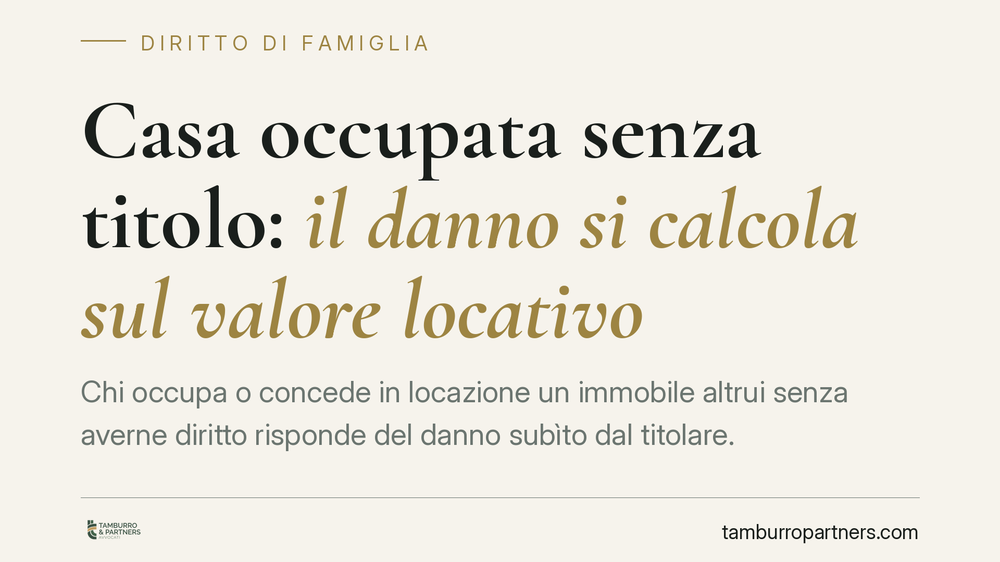

Casa occupata senza titolo: il danno si calcola sul valore locativo
Chi occupa o concede in locazione un immobile altrui senza averne diritto risponde del danno subìto dal titolare. La Cassazione, in linea con le Sezioni Unite del 2022, chiarisce che quel danno si calcola sul valore locativo del bene e non si presume: va allegato e provato. Un principio con ricadute concrete su separazioni, usufrutto e contratti a non domino.

Il caso e il principio
Un immobile viene occupato, o peggio concesso in affitto, da chi non ne ha titolo. Il proprietario — o l'usufruttuario — chiede il risarcimento. Su quale base si calcola la somma dovuta?
La Cassazione civile, Sezione III, ribadisce un criterio ormai consolidato: il danno da occupazione senza titolo si quantifica sul valore locativo dell'immobile, cioè sul canone che il bene avrebbe potuto produrre se concesso regolarmente in locazione. Chi priva il titolare della disponibilità del bene gli sottrae, in concreto, la possibilità di goderne o di trarne reddito.
Il fondamento resta aquiliano: l'art. 2043 cod. civ. impone a chi cagiona un danno ingiusto di risarcirlo. Va però segnalato che parte della giurisprudenza inquadra l'occupazione *sine titulo* anche in chiave diversa: come indebito arricchimento (art. 2041 cod. civ.), quando manchi una condotta colposa, o applicando in via analogica il parametro dell'art. 1591 cod. civ., dettato per la mora del conduttore nella restituzione. Il risultato pratico — la commisurazione al valore locativo — tende a convergere.
Il superamento del danno "in re ipsa"
Il punto decisivo è un altro. Per anni si è ritenuto che l'occupazione abusiva producesse un danno in re ipsa, cioè automatico, insito nel fatto stesso dell'occupazione, senza bisogno di prova.
Le Sezioni Unite (sentenza 15 novembre 2022, n. 33645) hanno superato questa impostazione. Il danno non è automatico: deve avere normale inerenza alla perdita della possibilità di godere del bene. In altri termini, il titolare deve allegare — e, se contestato, provare — che avrebbe effettivamente utilizzato o messo a reddito l'immobile.
Si tratta di una prova agevolata, non di una probatio diabolica. È sufficiente dimostrare, anche per presunzioni, che il bene era idoneo a essere goduto o locato e che l'occupazione ha impedito tale utilizzo. Resta ferma la possibilità di liquidazione equitativa ex art. 1226 cod. civ., quando il danno è certo nell'esistenza ma non precisamente quantificabile.
Usufrutto legale e usufrutto convenzionale
La vicenda tocca anche i rapporti familiari. Occorre distinguere due figure spesso confuse.
L'usufrutto legale dei genitori sui beni del figlio minore nasce direttamente dalla legge (art. 324 cod. civ.): i frutti sono destinati al mantenimento della famiglia e all'istruzione del figlio. È funzionale, non liberamente disponibile.
L'usufrutto convenzionale nasce invece da un atto negoziale — ad esempio una donazione con riserva — e attribuisce al titolare un diritto reale di godimento pieno, da esercitare nei limiti della destinazione economica del bene.
La distinzione pesa nella quantificazione: chi agisce deve dimostrare di essere titolare del diritto di godimento e che l'occupazione lo ha compromesso. Nei contesti di separazione, dove l'assegnazione della casa familiare si intreccia con la proprietà e con l'usufrutto a vantaggio del figlio, l'inquadramento del titolo è decisivo per capire chi può chiedere cosa.
Implicazioni pratiche
Per il titolare del diritto, la pronuncia conferma che il risarcimento non è scontato: va costruito. La misura naturale resta il canone di mercato, ma il presupposto è l'allegazione del pregiudizio.
Per chi detiene l'immobile senza titolo — o lo ha concesso a terzi — il rischio economico si misura sul valore locativo per l'intero periodo di occupazione, oltre a interessi ed eventuali ulteriori voci di danno.
Cosa fare in concreto
- Documenta il titolo: verifica e conserva gli atti che provano la tua posizione (proprietà, usufrutto legale o convenzionale, provvedimenti di assegnazione).
- Ricostruisci il valore locativo: raccogli dati di mercato, perizie, annunci comparabili o una stima tecnica per quantificare il canone ipotetico.
- Prova l'intenzione di godere del bene: allega elementi che dimostrino che avresti utilizzato o locato l'immobile (trattative, richieste di rilascio, utilizzi pregressi).
- Calcola il periodo: individua con precisione la data di inizio dell'occupazione senza titolo e quella di cessazione o restituzione.
- Consigliamo di formalizzare una richiesta di rilascio e risarcimento prima dell'azione giudiziale, per fissare la decorrenza e rafforzare la posizione probatoria.
Il danno da occupazione senza titolo non si presume più: si prova e si quantifica. Agire con una strategia probatoria ordinata, fin dalla diffida, è il modo più efficace per rendere concreto il diritto al risarcimento.
Disclaimer
Contributo informativo a cura di Tamburro & Partners Avvocati – Avv. Giuseppe Tamburro. Non costituisce parere legale.
Ogni famiglia ha il suo equilibrio.
Separazione, divorzio, affidamento, assegno: se vuoi un confronto riservato su una specifica situazione, scrivi allo studio. Ti rispondiamo entro un giorno lavorativo.